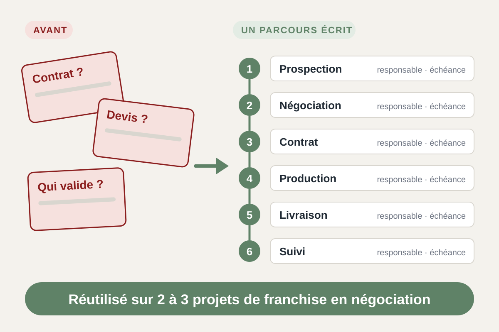

Projet 02 — Processus Franchise et Événementiel
Un parcours écrit une fois, réutilisé à chaque nouveau projet.
Chez UDC, startup deeptech de téléopération, les projets de franchise et d’événementiel se préparaient au cas par cas. J’ai écrit les deux processus étape par étape : qui fait quoi, avec quels documents, avant quelle échéance. Ils ont été appliqués aux négociations et aux contrats de 2 à 3 projets de franchise en cours.
Le projet en un coup d’œil.

Structurer ce qui n’existait pas encore.
Une franchise ou un événement mobilise beaucoup d’acteurs : le client, le cabinet juridique, les fournisseurs, l’équipe technique et la direction.
Sans processus écrit, chaque projet repartait de zéro : on cherchait le bon modèle de contrat, la bonne personne, l’étape suivante. J’ai observé les premiers projets, noté chaque étape et chaque document, puis tout organisé par priorité, chronologie, responsable et échéance.

Ne plus repartir de zéro.
Les informations utiles étaient dispersées entre e-mails, fichiers et échanges oraux.
J’ai regroupé dans un seul parcours les documents à produire (contrat de confidentialité, document d’information précontractuelle, contrat de franchise, devis, planning), les validations à obtenir et les points de contrôle. Le projet suivant part de cette base.

Le parcours, de la prospection au suivi.
Chaque étape a un responsable, des documents et une échéance. Les contrats sont revus avec le cabinet juridique avant signature.
Rendre l’organisation transmissible.
L’objectif n’était pas de figer les opérations, mais de créer suffisamment de structure pour rendre l’information plus facile à retrouver et les prochaines exécutions plus simples à préparer.
Cette logique permet également de réduire la dépendance aux échanges informels et de faciliter la transmission des connaissances.

Ce que cette structuration a changé.
L’information utile devient plus simple à identifier.
2 à 3 projets de franchise en négociation ont suivi le même parcours, sans repartir de zéro.
Le fonctionnement devient plus lisible pour les personnes amenées à intervenir.
Une organisation plus structurée facilite la gestion de nouveaux projets.
Automatiser au bon moment.
Toutes les améliorations opérationnelles ne nécessitent pas immédiatement une automatisation.
Avant d’automatiser, il faut comprendre le besoin, identifier les étapes réellement répétitives et distinguer ce qui peut être standardisé de ce qui nécessite encore du jugement humain.
Application à un contexte plus complexe.
Cette logique de structuration m’a ensuite accompagné dans la préparation du Mondial de l’Auto 2026, où UDC était prestataire de Honda : organiser une première exécution, coordonner les besoins opérationnels et capitaliser sur l’expérience acquise.
Voir le projet Honda →